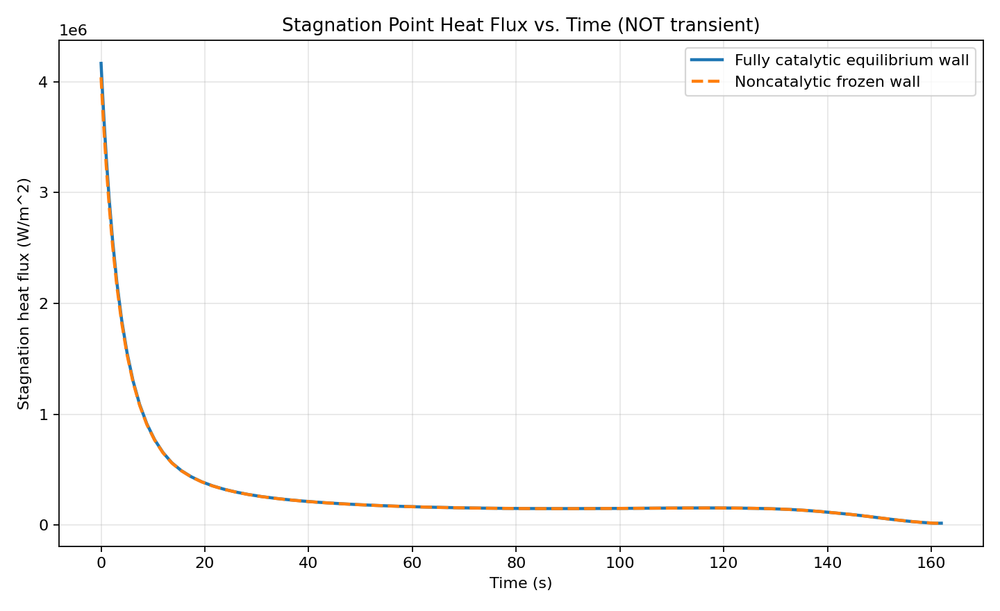
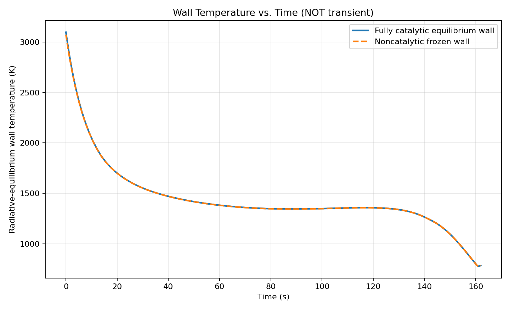

05 / AEROTHERMODYNAMICS / PYTHON
Stagnation point heat flux
A trajectory-driven model comparing catalytic and noncatalytic stagnation-point heating.
The objective
Estimate stagnation-point heating along a prescribed supersonic trajectory, including the effect of wall catalysis on convective heat transfer.
The approach
For each trajectory sample, the model evaluates atmospheric conditions, solves an equilibrium normal shock, and decelerates the post-shock gas to a stagnation-edge state. A Fay–Riddell-type heat-transfer prefactor and frozen-boundary-layer enthalpy analogy are coupled to a radiative wall balance.
The outcome
The saved run completed all 81 trajectory samples. It predicts peak heat fluxes of 4.17 MW/m² for the fully catalytic wall and 4.04 MW/m² for the noncatalytic wall. The fully catalytic peak equilibrium wall temperature is approximately 3,096 K.
Scope & interpretation
Each sample is an instantaneous radiative-equilibrium solution, not a time-integrated material temperature. The model excludes conduction, ablation, finite-rate chemistry, and ionization. Results depend on the prescribed trajectory, nose radius, and emissivity.

